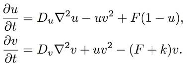
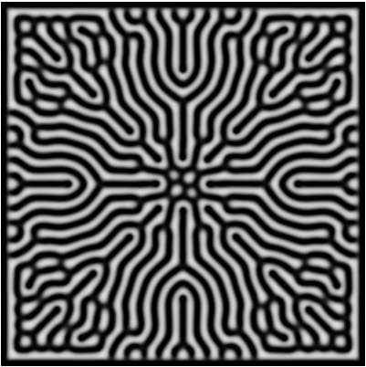
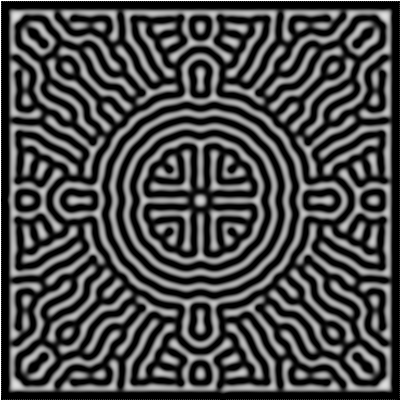
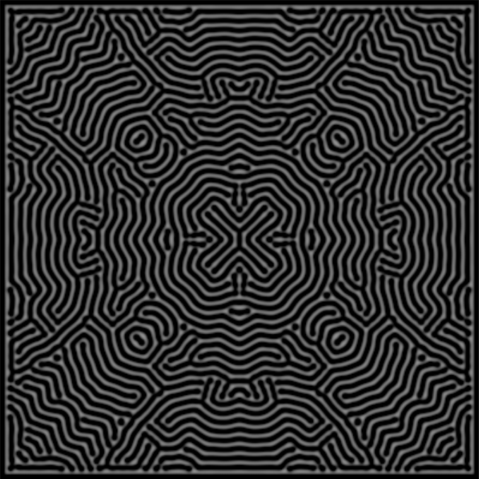

The Gray-Scott Equations model the reaction-diffusion of a system with an activator V and a substrate U. Activator V is an autocatalyst that needs substrate V to replicate itself.
You can play around with the parameters to observe different patterns. It will take about a minute to notice anything interesting.
See if you can get any of the below patterns.
  